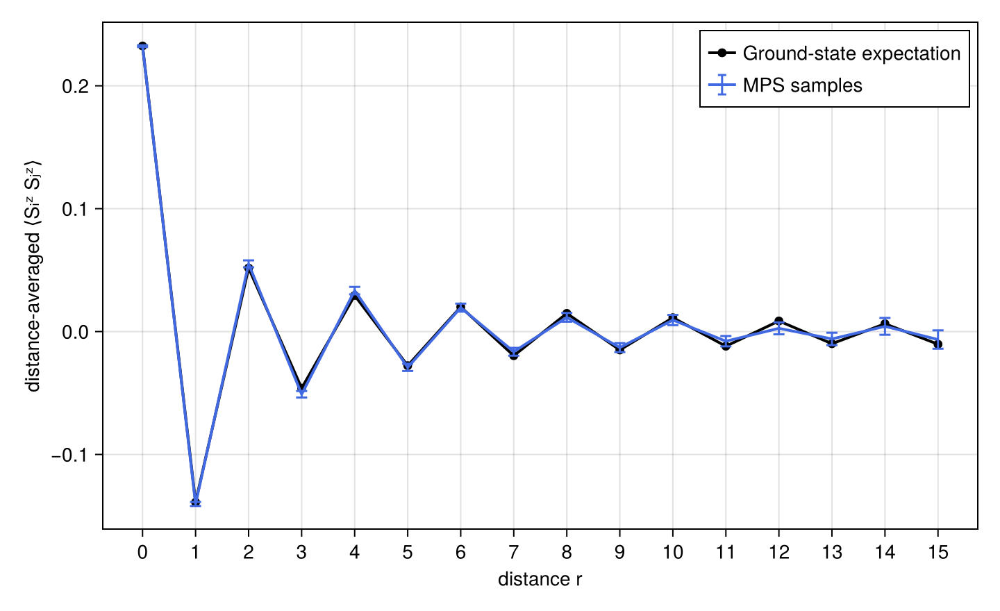
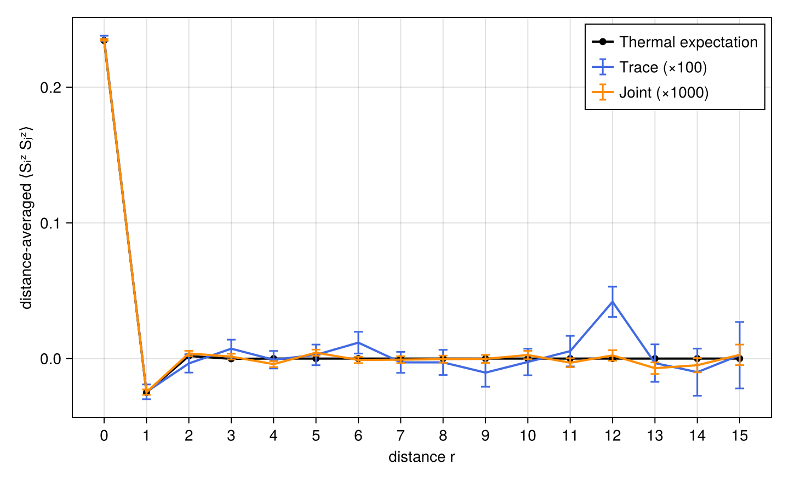

Tutorial
This tutorial demonstrates Born sampling on a half-filled Fermi-Hubbard chain using a ground-state MPS and a thermal purification MPO. We sample physical configurations from the ground state, and explore both the exact physical marginal and the joint physical–purification distribution from the thermal state.
The example uses a chain of length $L=16$, $U=8$, $\mu=U/2$, and bond dimension $D=512$. The calculations demonstrate the workflow rather than full numerical convergence.
Shared Hubbard setup
The Hamiltonian is
\[H = -\sum_{\langle i,j\rangle,\sigma} \left(c^\dagger_{i\sigma}c_{j\sigma} + \mathrm{h.c.}\right) + U\sum_i n_{i\uparrow}n_{i\downarrow} - \mu\sum_i n_i.\]
The model uses the charge U(1) and spin SU(2) representations from FiniteMPS.jl. Helper functions for state preparation, exact contraction, and plotting are defined in tutorial_helpers.jl.
L = 16
U = 8.0
mu = U / 2
D = 512
Ns_rankone = 1000
Ns_traced = 100
traced_batch_count = 10
ntasks = Threads.nthreads()
hamiltonian = hubbard_hamiltonian(L; U, mu)
sz_lookup = hubbard_sz_lookup()4-element Vector{Float64}:
0.5
-0.5
0.0
0.0Spin correlations at separation $r = |i - j|$ are averaged within each shot to compute the sample mean and standard error.
Ground-state MPS sampling
At half filling, total U(1) charge is zero in the particle–hole-symmetric convention. The ground state is prepared via CBE 1-DMRG with bond dimension $D$.
ground_state, ground_result = prepare_ground_state(
hamiltonian;
nsites=L,
D,
seed=3101,
)
ground_result(sweeps = 3, final_energy = -69.03713409165394)BornSampler compiles the contraction plans. Batched sampling returns configurations as matrix columns along with their log probabilities. By default, purified=true traces the boundary.
ground_direct = direct_szsz_by_distance(ground_state; ntasks)
ground_sampler = BornSampling.BornSampler(ground_state)
ground_batch = BornSampling.bornsample!(
Random.MersenneTwister(3102),
ground_sampler,
Ns_rankone;
ntasks,
)
ground_mean, ground_se = sampled_szsz_by_distance(
ground_batch.configuration,
sz_lookup,
)
plot_szsz_comparison(
ground_direct,
((
mean=ground_mean,
standard_error=ground_se,
color=:royalblue,
label="MPS samples",
),);
direct_label="Ground-state expectation",
filename="tutorial_hubbard_ground_state_szsz.png",
)
The sample mean estimates the spin correlation function, with error bars indicating the standard error.
ground_batch = nothing
ground_sampler = nothing
ground_state = nothing
GC.gc()Thermal purification MPO sampling
For a purified thermal state $|X\rangle$, setting purified=true traces the boundary and local purification legs to sample from the exact physical marginal:
\[p(x) = \frac{\sum_{y,b} |X(b,x,y)|^2}{\langle X|X\rangle},\]
while purified=false samples the joint distribution:
\[p(x,y,b) = \frac{|X(b,x,y)|^2}{\langle X|X\rangle}.\]
Discarding purification and boundary indices from joint samples yields the same physical marginal $p(x)$. The thermal state is prepared at $\beta=1$ using SETTN and CBE 1-TDVP.
factor, beta = prepare_thermal_factor(hamiltonian; D)
beta1.0Exact physical marginal
We compute the exact expectation value as a reference, then sample physical configurations from the traced marginal distribution. Here, shots are drawn in smaller batches to keep peak memory low.
thermal_direct = direct_szsz_by_distance(factor; ntasks)
traced_state = deepcopy(factor)
traced_sampler = BornSampling.BornSampler(traced_state; purified=true)
traced_rng = Random.MersenneTwister(3201)
traced_configuration = Matrix{Int}(undef, L, Ns_traced)
traced_batch_size = Ns_traced ÷ traced_batch_count
for batch in 1:traced_batch_count
columns = ((batch - 1) * traced_batch_size + 1):(batch * traced_batch_size)
result = BornSampling.bornsample!(
traced_rng,
traced_sampler,
traced_batch_size;
ntasks,
)
traced_configuration[:, columns] .= result.configuration
end
traced_mean, traced_se = sampled_szsz_by_distance(
traced_configuration,
sz_lookup,
)
traced_configuration = nothing
traced_sampler = nothing
traced_state = nothing
GC.gc()Joint physical–purification samples
Joint sampling returns a $(2L+1)\times N_s$ configuration matrix ordered as $[x_1,\ldots,x_L,y_1,\ldots,y_L,b]$, with $b=1$ for the singlet boundary. The first $L$ rows correspond to physical indices and are passed directly to the correlation estimator.
joint_sampler = BornSampling.BornSampler(factor; purified=false)
joint_batch = BornSampling.bornsample!(
Random.MersenneTwister(3202),
joint_sampler,
Ns_rankone;
ntasks,
)
joint_physical_configuration = @view joint_batch.configuration[1:L, :]
joint_mean, joint_se = sampled_szsz_by_distance(
joint_physical_configuration,
sz_lookup,
)
joint_summary = (;
joint_configuration_size=size(joint_batch.configuration),
samples=Ns_rankone,
)
joint_summary(joint_configuration_size = (33, 1000), samples = 1000)We compare the exact thermal expectation against both traced sampling and the physical marginal of joint sampling.
plot_szsz_comparison(
thermal_direct,
(
(
mean=traced_mean,
standard_error=traced_se,
color=:royalblue,
label="Trace (×$(Ns_traced))",
),
(
mean=joint_mean,
standard_error=joint_se,
color=:darkorange,
label="Joint (×$(Ns_rankone))",
),
);
direct_label="Thermal expectation",
filename="tutorial_hubbard_thermal_szsz.png",
)